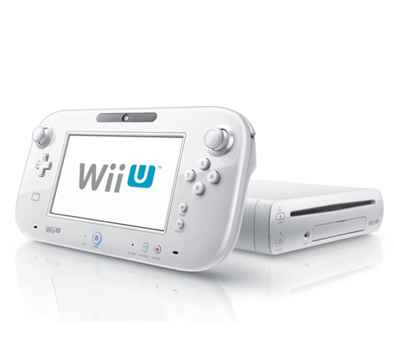

趣味について
ゲーム

ポケモンは昔からずっと好き。カービィやsplatoon、任天堂以外ならモンハンやカセキホリダーも履修済み。
最近は原神のストーリー履修に追われる日々。
アニメ

昔は深夜アニメを毎シーズン３本くらい追っていた。
近年はほとんど追えていないが、今期（2026年春現在）は黄泉のツガイが楽しみ。

ポケモンは昔からずっと好き。カービィやsplatoon、任天堂以外ならモンハンやカセキホリダーも履修済み。
最近は原神のストーリー履修に追われる日々。
昔は深夜アニメを毎シーズン３本くらい追っていた。
近年はほとんど追えていないが、今期（2026年春現在）は黄泉のツガイが楽しみ。